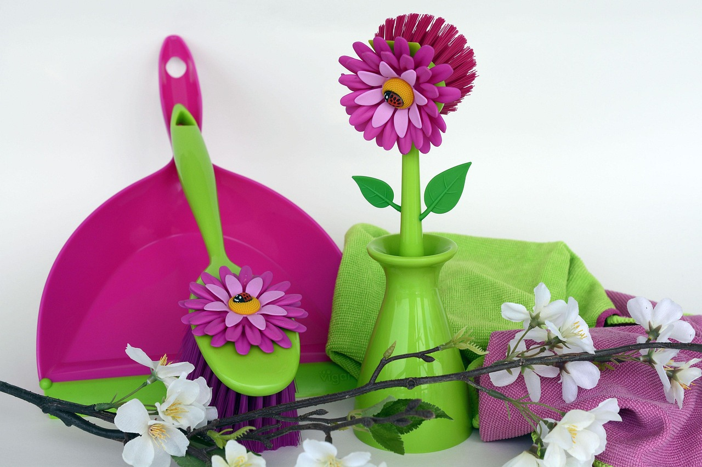

How to Clean and Polish Your Plantarium to Maintain Its Beauty

Photo: anncapictures / Pixabay
A plantarium (a terrarium or small glass container with plants) stays attractive when the glass is clean and dead leaves are removed before they rot. It does not need to be "polished". Gentle cleaning is enough, and some common cleaning habits can actually harm it.
What to avoid
- abrasive pads or sandpaper on the glass, which scratch it;
- alcohol, scented cleaners and disinfectant sprays near the plants;
- spraying any cleaning product directly on the plants.
Clean the glass
Remove the lid if there is one. Wipe the outside with a soft or microfiber cloth lightly dampened with water. For the inside, use a soft cloth or sponge on a stick, warm water and, if needed, a drop of mild soap, taking care that none runs onto the soil. Wipe again with a cloth dampened with plain water, then dry the glass.
Care for the plants
Remove yellow or brown leaves with clean tweezers or small scissors, because they rot quickly in a humid space. Dust leaves with a soft brush. Do not spray anything on them.
Watch the soil surface
Look for white or gray mold. Scoop it out with a clean spoon and open the container for a few hours to let air circulate. If mold keeps returning, there is usually too much moisture.
A simple routine
- Weekly: look it over and remove dead leaves.
- Monthly: wipe the glass.
- Every few months: check soil moisture and air it out.
Place your plantarium where cats and dogs cannot knock it over or nibble the contents, since several terrarium plants irritate or poison pets.
As an Amazon Associate, I earn from qualifying purchases.